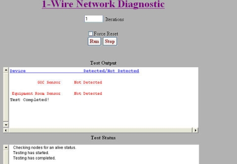
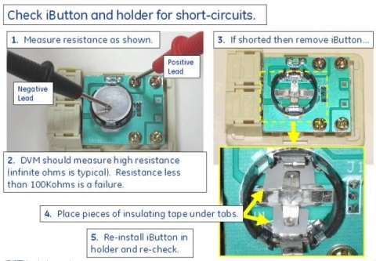

This troubleshooting document identifies common failures with the 1–wire Temperature and Humidity Sensors. Most reporting errors are due to incorrect wiring and loose connection issues.
The environment sensor network, 5147136-2. This type directly converts the signals from USB to 1-Wire, eliminating the intermediate conversion to RS-232 Serial. Additionally, the second type eliminates the need for the 1-Wire Hub. This is accomplished by using the iButton Sensors' SRAM to hold unique ID information for each of the 2 sensors. The block diagram for this type of sensor network is shown in Figure 1.
Figure 1. USB to 1-Wire Environmental Sensors Block Diagram
note:
Either the first or second type of sensor network is installed in the system- not both.
note:
The environmental sensors obtain environmental readings from the Equipment Room and the back of the GOC. The room's environmental conditions are the responsibility of the customer and their HVAC provider. If the environmental logs are consistently reporting values outside of the specifications (found in the Site Environment section in the appropriate pre-installation manual), the customer's equipment is at risk and the customer should contact their building's HVAC service personnel as soon as possible.
1 Determining the Type of Sensor Network Installed in System
When performing this procedure, the contents of the GOC will
be exposed. Power must be retained during these steps. Extreme caution
must be taken.
warning
ELECTROCUTION HAZARD!
HIGH VOLTAGE PRESENT.
USE care when securing component connections.
Use a Phillips screwdriver to open the right side cover of the GOC.
2 USB to 1-Wire Network Troubleshooting
Verifying Communication Paths for USB to 1-Wire Sensor Network
This step confirms that the communication connections are made
securely and properly to the appropriate ports.
Verify that the USB to 1-Wire Adapter is properly connected. See Figure 2.
Figure 2. USB to 1-Wire Adapter
Verify that connections in Run 1383 are secure from USB to 1-Wire Adapter output port to the iButton Sensor 5141857-5 on the back of the GOC. (See Figure 1 and Figure 3).
Figure 3. Operator Console
Verify that connections in Run 1384 are secure from iButton Sensor 5141857-5 on the back of the GOC to iButton Sensor 5141857-4 on System Cabinet. (See Figure 1, Figure 3, and Figure 4).
Verify that the sensor on the back of the GOC is labeled “Operator
Console.” (See Figure 3).
Verify that the sensor on the System Cabinet (in the equipment
room) is labeled “System Cabinet.” (See Figure 4).
1-Wire Network Diagnostic
Run the 1-Wire Network Diagnostic Tool by selecting: Diagnostics >> Peripherals >> 1-Wire Network Diagnostic.
Figure 5. 1-Wire Network Diagnostic
The 1-Wire Diagnostic checks to see if all of the 1-Wire devices in the network are connected (GOC and EQUIP). The diagnostic also outputs temperature and humidity values for the GOC and Equipment Room Sensor. All 1-Wire devices detected by the 1-Wire Network Diagnostic display in blue text in the Test Output area (see Figure 6). 1-Wire devices which are not detected display in red text (see Figure 7).
If desired, enter or select alternate test parameters as described below.
To run the diagnostic more than once, enter a different value in the Iterations field.
To force the 1-Wire network to be remapped, select Force 1-Wire Reset. This is useful when hardware has been replaced to identify 1-Wire devices in the new hardware.
note:
A TPS Reset also accomplishes a 1-Wire Reset, but any new hardware installed during troubleshooting can be identified using this option prior to doing a TPS Reset.
Figure 6. 1-Wire Devices Detected by the 1-Wire Network Diagnostic
Figure 7. 1-Wire Devices Not Detected by the 1-Wire Network Diagnostic

3 Common Mistakes to Avoid
Common Mistakes in Both Networks
Verify iButton is seated correctly. An example of the iButton not seated is shown in Figure 8.
Figure 8. iButton Not Seated
Verify that there is a good connection between iButton and holder (no intermittent or shorted connections). Examples of intermittent and shorted connections are shown in Figure 9 and Figure 10.
Figure 9. Intermittent Connection
Figure 10. iButton and Holder

note:
If disconnecting the iButton cable from the 1-Wire Hub results in detection of the opposite iButton, this suggests that the disconnected iButton or holder was shorting out the hub bus. Removing the failing iButton from its holder and slightly bending the holder contacts away from the traces underneath may restore functionality. Applying insulating tape as shown in Figure 10 may also help. Otherwise, replace the holder.
4 Helpful Information
System needs a TPS reset or "Force Reset" in the 1-Wire Diags
if an iButton is replaced.
The estimated life of an iButton, assuming a 30-minute sample
rate, is from 5 to 7 years; an increase in sample rate decreases the
iButton life span.
Sensors must be located on the outside of cabinets in the locations
shown in the installation manual. Locating sensors on the inside of
cabinets obscures the ability to sense the actual room temperature
and humidity.
Convert degrees Fahrenheit to degrees Celsius using this formula:
C = (F - 32) / 1.8
Convert degrees Celsius to degrees Fahrenheit using this formula:
F = (C x 1.8) + 32
5 Finalization
note: The iButton sensors obtain a reading every 30 minutes. A reboot at installation is necessary for the iButtons to start sampling and for the system to start polling. The system polls iButtons once a day. These intervals cannot be edited or changed as they are in an encrypted config file in the field.
Install Service Key.
Open the Common Service Desktop and select Utilites -> Toolbox -> Environmental Monitoring. See Figure 11.
Select "click here to start this tool".
Figure 11. Environmental Monitoring
View the output similar to the one shown in Figure 12. From the dropdown under "Choose data to view" you can select GOC temperature, GOC humidity, Equipment Room Temperature, or Equipment Room Humidity. Date and time are also displayed.
Figure 12. Output
If none of these steps lead to successfully restoring communication between the sensors and the GOC, the sensors may need to replaced. These sensors are simple devices rated to last for 150,000 iterations (or approximately seven years) on the HDx Series system. They should not need replacing unless they have approached that level of usage.